This type of data visualization is intended for the comparison of two different indicators, using one axis for each of them.
This chart provides an important possibility to observe correlations between two different indicators.
The scatter chart also provides an enhanced functionality for selection or 2-dimensional intervals of units - read more on this functionality in this chapter.
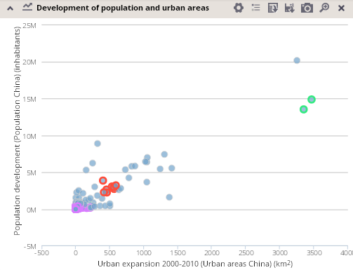
Indicators for x and y axes have to be defined respectively via the chart configuration dialog. The information on each unit, including the indicators' definitions and their values, is easily accessible when the mouse hovers over the unit in the chart.
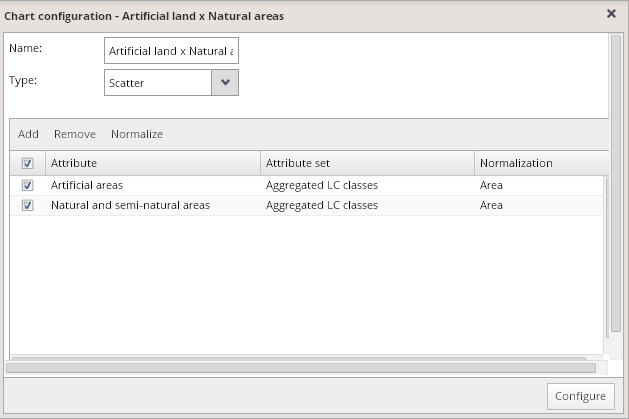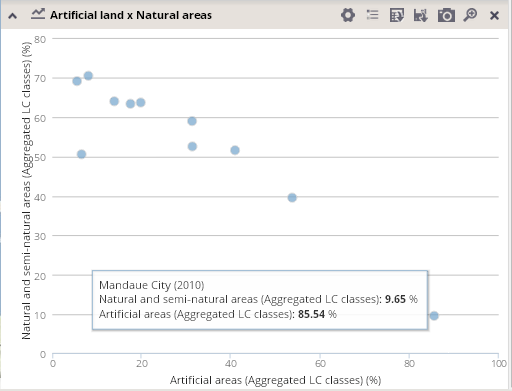
3-D scatter charts
It is also possible to incorporate a third variable into the scatter chart, which is then projected into the size of the circle representing each unit. A third variable can be added to the chart by defining a third attribute in the chart configuration dialog.
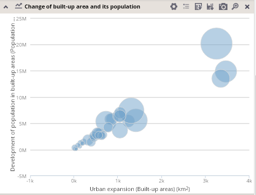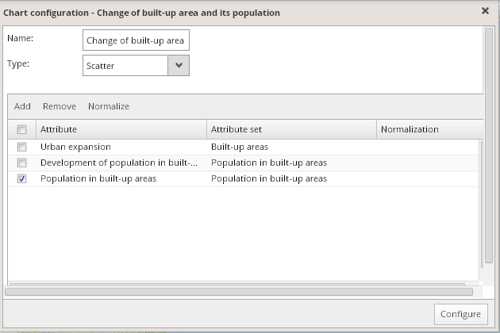
Also the information about this third attribute is then available when the mouse hovers over each unit in the chart.
Zooming in scatter charts
You can zoom into the selected part of the scatter chart and to explore the distribution of units in detail.
For activation of the zoom-in mode, press the "zoom in" icon 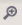 at the top of the chart. When the zoom-in mode is activated, the icon remains changed as follows: .
Hold the left mouse button and draw a rectangle over the part of the chart you want to zoom in on. Drop the left mouse button to zoom into the drawn rectangle.
Reset the zoom-in by pressing the "Reset zoom" icon in the upper left corner of the chart. After pressing this button, the chart returns to the initial zoom over the full set of expanded units while the zoom-in mode remains activated, so you can zoom in again into an arbitrary part of the chart. Deactivate the zoom-in mode by another pressing of the icon at the top of the chart.
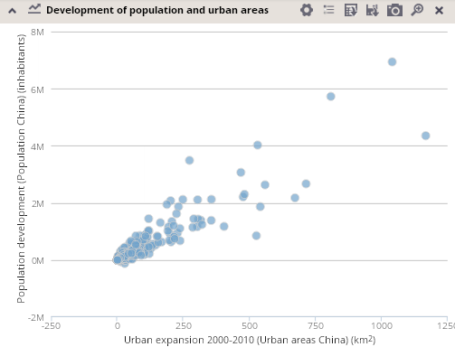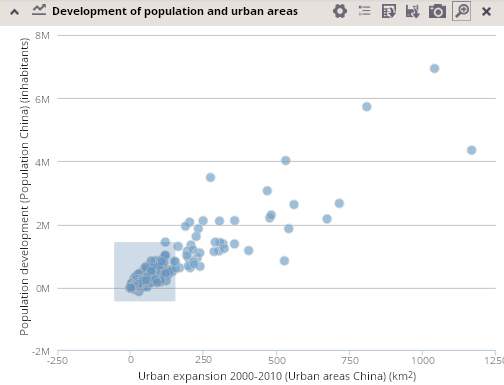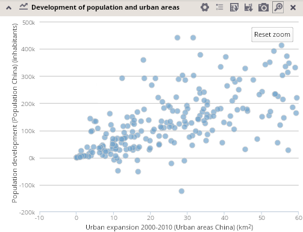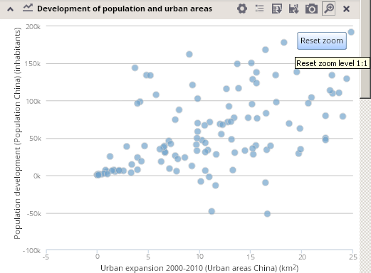
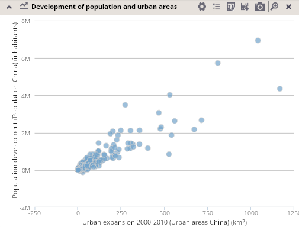